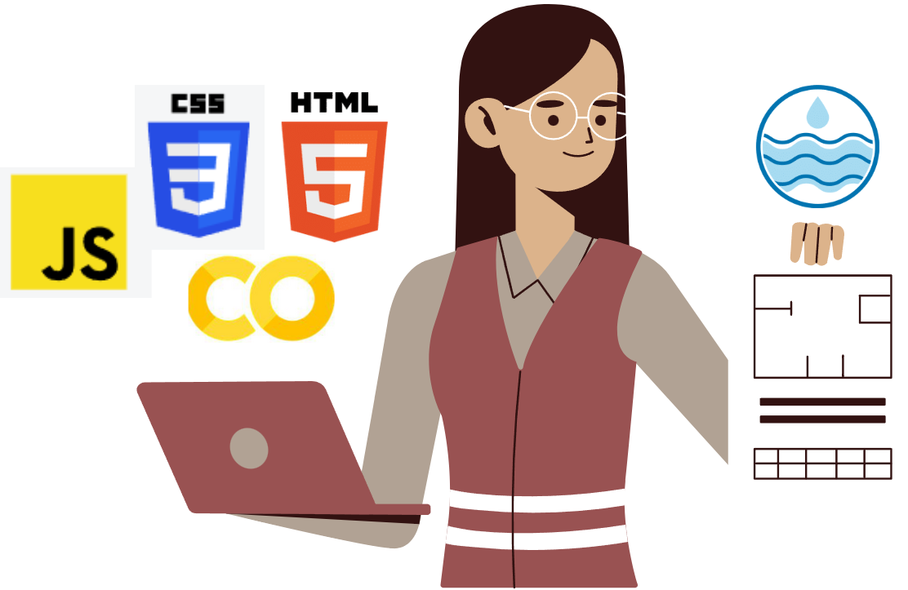

¡Hola! Soy Alondra Angelica Monroy Perfecto

Soy estudiante de Ingeniería Ambiental en la UNAM, con especialización en Calidad del Agua y diseño de sistemas hidráulicos. Utilizo el software Hidráulica Termo Plus para diseñar sistemas de agua potable y alcantarillado. Actualmente, participo en la coordinación de eventos del capítulo estudiantil NASTT-UNAM, enfocado en tecnologías sin zanja. Además, estoy tomando un curso de Ciencia de Datos en Tecnolochicas PRO y desarrollando habilidades como junior en diseño web Front-End. En mi tiempo libre, practico danza folklórica y disfruto enseñando matemáticas a jóvenes.
Estudiante
Actualmente participo en la coordinación de eventos del capítulo estudiantil NASTT-UNAM, promoviendo tecnologías sin zanja para infraestructura sostenible. Anteriormente, realicé mi servicio social en la División de Ingeniería Sanitaria y Ambiental (DISA), donde gestioné informes, coordiné visitas técnicas, realicé pagos de seguros y apoyé en la comunicación administrativa.
Ingeniería Ambiental
Especializada en calidad del agua y manejo sostenible de recursos hídricos. Poseo experiencia en la implementación de sistemas de alcantarillado y agua potable en ciudades, utilizando el software Hidráulica Termo Plus. Además, tengo conocimientos en sistemas de captación de agua pluvial, sistemas contra incendios y distribución de agua potable en edificios.
Ciencia de Datos y Desarrollo Web
Actualmente, me formo en Ciencia de Datos con Tecnolochicas PRO, enfocándome en el análisis de datos para proyectos ambientales. También me especializo en desarrollo web Front-End como Jr. Developer.